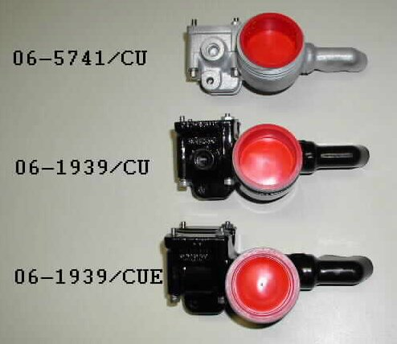
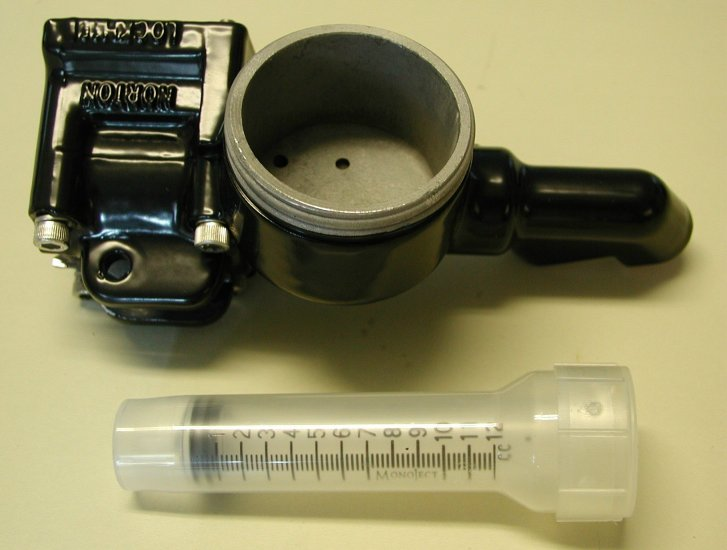
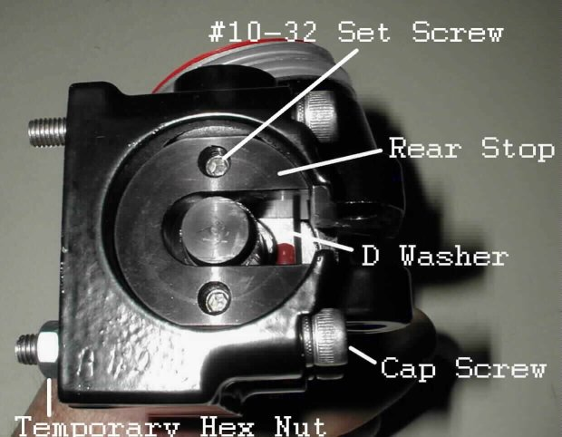
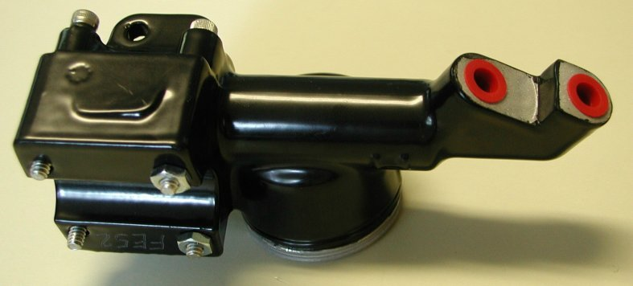
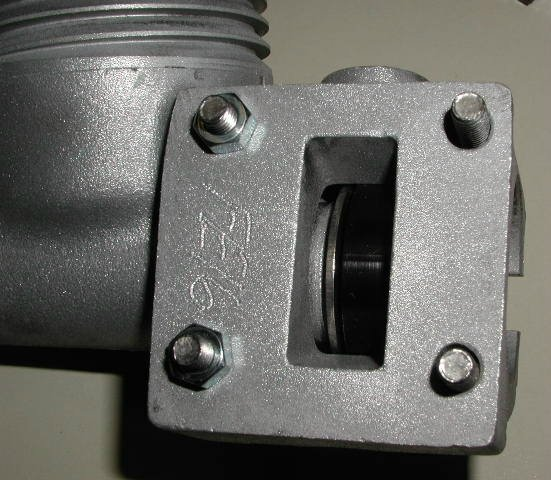

- Part Number 06-5741/CU, used only on the 1975 MK3 Commando.
- Part Number 06-1939/CU, used on the 850 Commando.
- Part Number 06-1939/CUE, used on the early 750 Commando.
The 850 and the MK3 master cylinders have a mirror mounting lug where the early 750 master cylinder does not have the mounting lug.
The way we work the upgrade is if your master cylinder is not scraped up and is rebuildable, we will send you a like master cylinder that we have in stock when we receive your master cylinder. Sorry, but we can no longer ship rebuilt master cylinders, without receiving yours first, due to not receiving enough cores back to have an adequate stock of rebuilt master cylinders.

Each master cylinder comes with a bleeding syringe and instructions. See the mounting, bleeding instructions and limited warranty at the end
of this page.



If you have also rebuilt the caliper prior to bleeding the brake, it is advisable to have the brake pads in intimate contact with the disk. There are two ways to accomplish this:
1. Re-attach the rebuilt caliper to the fork leg. With the stock master cylinder in place, use it to refill the caliper. Refilling the caliper will press the pads against the disk. Remove the stock master cylinder and skip to “HYDRAULIC BRAKE RE-ASSEMBLY” below.
2. If you do not have a stock master cylinder: With the caliper bleed valve closed, use a rubber cone tipped air nozzle and apply air pressure at the inlet port to pressurize the caliper. Air pressure will force the pads against the disk. Skip to “HYDRAULIC BRAKE RE-ASSEMBLY” below.
HYDRAULIC BRAKE RE-ASSEMBLY
Before attaching to the handlebars: remove the cap plugs and reservoir packing and slip the vinyl boot over the top end of the brake line; attach the top end of the hydraulic line to the forward master cylinder port. Care should be taken not to twist the brake line during assembly. The hydraulic line should be installed so that when the master cylinder is eventually re-attached to the handle bar, there is no kink in the hydraulic line. It may be necessary to re-align the hydraulic line radially be loosening, rotating and then re-tightening the bulkhead fitting at the caliper end of the system. Next, install the brake switch to the remaining master cylinder port. Prior to bleeding the brake, make sure all fittings (switch and hydraulic line master cylinder ports and bulkhead fittings) are tight.
BLEEDING THE NEW BRAKE ASSEMBLY
NOTE: PUMPING” WILL NOT BLEED YOUR NEW BRAKE SYSTEM.
Before attaching the master cylinder to the handlebar, bleed the brake system. Start by draping a few rags across the valley between the handlebars and the headlight. Attach the reservoir cap and gasket to the reservoir. Slip a ¼” box wrench over the bleed valve of the caliper. Attach the short length of vinyl tube (found inside the syringe housing) to the end of the syringe (provided). Draw fresh brake fluid into the syringe unit the syringe is full. Using the syringe, deposit a little brake fluid at the opening of the bleed valve. Depositing the little brake fluid at the bleed valve opening causes a meniscus to form over the bleed valve opening. This meniscus or bubble of brake fluid displaces any air at the opening of the bleed valve. Displacing air at the opening prevents any air bubbles from being injected when the bleed valve is opened. This is especially important if additional bleeding is required. Force the open end of the vinyl tube over the bleed valve. Make sure there are no air bubbles present at the open end of the vinyl tube. If air bubbles are present, remove the syringe with the vinyl tube attached, squirt a little fluid out of the syringe and then reattach the syringe and tube. Open the bleed valve slightly. While holding the master cylinder vertically in one hand, slowly begin to inject brake fluid into the caliper with the other hand. As you inject the fluid, rotate the upper end of the master cylinder in a circle. Holding the master cylinder vertically and rotating the upper end in a circle which injecting the brake fluid into the caliper insures that all air bubble will be forced out of the line and into the reservoir. Do not fully depress the plunger of the syringe. Stopping the plunger early will prevent injecting the always-present air at the end of the plunger. Leaving a little fluid in the syringe insures against injecting air bubbles into the caliper housing. When almost all the fluid is gone from the syringe, close the bleed valve, set the master cylinder on the rages placed across the handlebars and remove the syringe with the vinyl tube still attached. Reload the syringe and repeat the above operation to insure all bubbles have been displaced. The syringe holds 12 cubic centimeters of fluid. The reservoir will comfortably hold 24 cubic centimeters. If it becomes necessary to bleed beyond two full syringes, some of the fluid may need to be removed from the reservoir.
REATTACHING THE MASTER CYLINDER TO THE HANDLEBARS
There are (4) socket head cap screws provided. Remove and discard the (2) temporary hex nuts from the forward Socket Head Cap Screws. With a 3/32” Allen wrench, slightly loosen the #10-32 set screws in the rear stop that capture the remaining Socket Head Cap Screws. Using the appropriate Allen wrench, tighten the SST Socket Head Cap Screws to the switch cluster with the handle bar sandwiched in between. After tightening all (4) Socket Head Cap Screws, tighten the #10-32 set screws in the stop with a 3/32” Allen wrench. Care must be taken to snug the screws up against the back of the cartridge sleeve. Alternately, tighten the top and bottom set screws until they feel equally tight. If is not necessary to tighten beyond about 20 inch/pounds of torque. 20 inch/pounds of torque can be achieved by using the short leg of a standard Allen wrench as a lever. Do not over tighten. Install the brake lever.
The rear stop is sandwiched between the cartridge sleeve and the horizontal SST Socket Head Cap Screws. The stop prevents the cartridge assembly from backing out of the master cylinder when the brake is applied. Tightening the set screws force the cartridge sleeve into the master cylinder and force the stop back again the SST Head Cap Screws. The SST Socket Head Cap Screws were selected because of their non-threaded shank section. Without the (2) rear Socket Head Cap Screws, the brake will not function. Replacing this hardware with any other hardware is not recommended.
At completion: Test the brake. If it feels spongy or the handle travel is excessive, repeat the bleeding procedure. When bleeding is complete add fluid to the reservoir as required, replace and tighten the reservoir cap. Test the brake prior to sliding the sleeve up over the end of the exit ports.
LIMITED WARRANTY AND DISCLAIMER
This master cylinder was re-manufactured from an assembly whose original bore was compromised. Replacing the present cartridge with OEM piston and seals will result in brake fluid leakage.
There are no consumer serviceable components within this assembly. Internal seals were specifically compounded for their brake fluid compatibility. After market, consumer substituted, components may deteriorate in the presence of brake fluid, resulting in brake failure. Disassembly damages the seals. If service is required, return assembly to point of purchase.
Your new master cylinder will work with an OEM brake line, but to realize the full benefit of the improved master cylinder, it is recommended that the OEM brake line be replaced with a braided stainless steel reinforced one. The cartridge assembly is guaranteed for one year from date of purchase. If service is required, return assembly, with proof of purchase, to point of purchase. Any tampering, damage or disassembly voids warranty. Assembly is warranted for part replacement only.
Tech support: Brakeman@att.net
Norton Parts …..Wheels, Brakes…..Brakes
This page was written and designed by F. H. Eaton
& Associates if you have any questions or comments please
contact us at info@fheaton.com